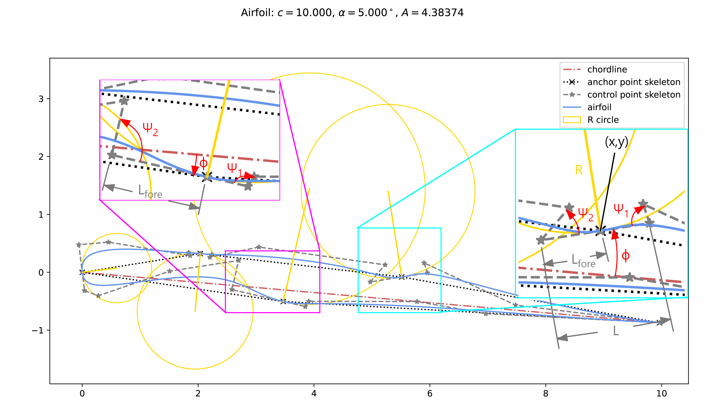

Module pyairpar.core.anchor_point
Expand source code
from pyairpar.core.param import Param
import numpy as np
class AnchorPoint:
def __init__(self,
x: Param,
y: Param,
name: str,
previous_anchor_point: str,
L: Param,
R: Param,
r: Param,
phi: Param,
psi1: Param,
psi2: Param,
length_scale_dimension: float = None):
"""
### Description:
The `AnchorPoint` in `pyairpar` is the way to split a Bézier curve within an `pyairpar.core.airfoil.Airfoil`
into two Bézier curves and satisfy \\(G^0\\), \\(G^1\\), and \\(G^2\\) continuity at the joint between the
curves. Examples of implemented `AnchorPoint`s in an unnecessarily strange airfoil shape are shown in the
image below. It may be helpful to enlarge the image by opening it in a new tab.
.. image:: complex_airfoil_anchor_points.png
### Args:
`x`: ( \\(x\\) ) `pyairpar.core.param.Param` describing the x-location of the `AnchorPoint`
`y`: ( \\(y\\) ) `pyairpar.core.param.Param` describing the y-location of the `AnchorPoint`
`previous_anchor_point`: a `str` representing the previous `AnchorPoint` (counter-clockwise ordering)
`L`: ( \\(L\\) ) `pyairpar.core.param.Param` describing the distance between the control points on either
side of the `pyairpar.core.anchor_point.AnchorPoint`
`R`: ( \\(R\\) ) `pyairpar.core.param.Param` representing the radius of curvature at the \\(x\\) - \\(y\\)
location of the `AnchorPoint`. A positive value makes the airfoil convex at the `AnchorPoint` location,
and a negative value makes the airfoil concave at the `AnchorPoint` location. A value of 0 creates a
flat-plate-type leading edge. The valid range is \\( R \\in [-\infty, \infty] \\). Inclusive brackets are
used here because setting \\(R=\\pm \\infty\\) creates an anchor point with no curvature (infinite radius of
curvature).
`r`: ( \\(r\\) ) `pyairpar.core.param.Param` representing the ratio of the distance from the `AnchorPoint`
location to the neighboring control point closest to the trailing edge to the distance between the
`AnchorPoint`'s neighboring control points ( \\(L_{fore} / L\\) ). The valid range is \\(r \\in (0,1)\\).
`phi`: ( \\(\\phi\\) ) `pyairpar.core.param.Param` representing the angle of the line passing through the
`AnchorPoint`'s neighboring control points, referenced counter-clockwise from the chordline if the
`AnchorPoint` is on the upper airfoil surface and clockwise from the chordline if the `AnchorPoint` is on the
lower airfoil surface. The valid range is \\(\\psi_1 \\in [-180^{\\circ},180^{\\circ}]\\). A value of \\(0^{
\\circ}\\) creates an anchor point with local slope equal to the slope of the chordline.
`psi1`: ( \\(\\psi_1\\) ) `pyairpar.core.param.Param` representing the angle of the aft curvature control "arm."
Regardless of the sign of \\(R\\) or which surface the `AnchorPoint` lies on, an angle of \\(90^{\\circ}\\)
always means that the curvature control arm points perpendicular to the line passing through the
neighboring control points of the `AnchorPoint`. Angles below \\(90^{\\circ}\\) "tuck" the arms in, and angles
above \\(90^{\\circ}\\) "spread" the arms out. The valid range is \\(\\psi_1 \\in (0^{\\circ},180^{\\circ})\\).
`psi2`: ( \\(\\psi_2\\) ) `pyairpar.core.param.Param` representing the angle of the fore curvature control
"arm." Regardless of the sign of \\(R\\) or which surface the `AnchorPoint` lies on, an angle of \\(90^{
\\circ}\\) always means that the curvature control arm points perpendicular to the line passing through the
neighboring control points of the `AnchorPoint`. Angles below \\(90^{\\circ}\\) "tuck" the arms in,
and angles above \\(90^{\\circ}\\) "spread" the arms out. The valid range is \\(\\psi_2 \\in (0^{\\circ},
180^{\\circ})\\).
`length_scale_dimension`: a `float` giving the length scale by which to non-dimensionalize the `x` and `y`
values (optional)
### Returns:
An instance of the `AnchorPoint` class
"""
self.x = x
self.y = y
self.name = name
self.previous_anchor_point = previous_anchor_point
self.L = L
self.R = R
if 0 < r.value < 1:
self.r = r
else:
raise ValueError(f'The distance fraction, r, must be between 0 and 1. A value of {r.value} was entered.')
if -np.pi <= phi.value <= np.pi:
self.phi = phi
else:
raise ValueError(f'The anchor point neighboring control point angle, phi, must be between -180 degrees and'
f' 180 degrees, inclusive. A value of {phi.value} was entered.')
if 0 <= psi1.value <= np.pi:
self.psi1 = psi1
else:
raise ValueError(f'The aft curvature control arm angle, psi1, must be between 0 degrees and 180 degrees, '
f'inclusive. '
f'A value of {psi1.value} was entered.')
if 0 <= psi2.value <= np.pi:
self.psi2 = psi2
else:
raise ValueError(f'The fore curvature control arm angle, psi2, must be between 0 degrees and 180 degrees,'
f'inclusive. '
f'A value of {psi2.value} was entered.')
self.length_scale_dimension = length_scale_dimension
self.n_overrideable_parameters = self.count_overrideable_variables()
self.scale_vars()
self.xy = np.array([x.value, y.value])
def scale_vars(self):
"""
### Description:
Scales all of the `pyairpar.core.param.Param`s in the `AnchorPoint` with `units == 'length'` by the
`length_scale_dimension`. Scaling only occurs for each parameter if the `pyairpar.core.param.Param` has not yet
been scaled.
"""
if self.length_scale_dimension is not None: # only scale if the anchor point has a length scale dimension
for param in [var for var in vars(self).values() # For each parameter in the anchor point,
if isinstance(var, Param) and var.units == 'length']:
if param.scale_value is None: # only scale if the parameter has not yet been scaled
param.value = param.value * self.length_scale_dimension
def count_overrideable_variables(self):
"""
### Description:
Counts all the overrideable `pyairpar.core.param.Param`s in the `AnchorPoint` (criteria:
`pyairpar.core.param.Param().active == True`, `pyairpar.core.param.Param().linked == False`)
### Returns:
Number of overrideable variables (`int`)
"""
n_overrideable_variables = len([var for var in vars(self).values()
if isinstance(var, Param) and var.active and not var.linked])
return n_overrideable_variables
def override(self, parameters: list):
"""
### Description:
Overrides all the `pyairpar.core.param.Param`s in `AnchorPoint` which are active and not linked using a list of
parameters. This list of parameters is likely a subset of parameters passed to either
`pyairpar.core.airfoil.Airfoil` or `pyairpar.core.parametrization.AirfoilParametrization`. This function is
useful whenever iteration over only the relevant parameters is required.
### Args:
`parameters`: a `list` of parameters
"""
override_param_obj_list = [var for var in vars(self).values()
if isinstance(var, Param) and var.active and not var.linked]
if len(parameters) != len(override_param_obj_list):
raise Exception('Number of base airfoil parameters does not match length of input override parameter list')
param_idx = 0
for param in override_param_obj_list:
setattr(param, 'value', parameters[param_idx])
param_idx += 1
self.scale_vars()
self.xy = np.array([self.x.value, self.y.value])
def set_all_as_linked(self):
"""
### Description:
Sets `linked=True` on all `pyairpar.core.param.Param`s in the `AnchorPoint`
"""
for param in [var for var in vars(self).values() if isinstance(var, Param)]:
param.linked = TrueClasses
class AnchorPoint (x: Param, y: Param, name: str, previous_anchor_point: str, L: Param, R: Param, r: Param, phi: Param, psi1: Param, psi2: Param, length_scale_dimension: float = None)-
Description:
The
AnchorPointinpyairparis the way to split a Bézier curve within anAirfoilinto two Bézier curves and satisfy G^0, G^1, and G^2 continuity at the joint between the curves. Examples of implementedAnchorPoints in an unnecessarily strange airfoil shape are shown in the image below. It may be helpful to enlarge the image by opening it in a new tab.
Args:
x: ( x )Paramdescribing the x-location of theAnchorPointy: ( y )Paramdescribing the y-location of theAnchorPointprevious_anchor_point: astrrepresenting the previousAnchorPoint(counter-clockwise ordering)L: ( L )Paramdescribing the distance between the control points on either side of theAnchorPointR: ( R )Paramrepresenting the radius of curvature at the x - y location of theAnchorPoint. A positive value makes the airfoil convex at theAnchorPointlocation, and a negative value makes the airfoil concave at theAnchorPointlocation. A value of 0 creates a flat-plate-type leading edge. The valid range is R \in [-\infty, \infty] . Inclusive brackets are used here because setting R=\pm \infty creates an anchor point with no curvature (infinite radius of curvature).r: ( r )Paramrepresenting the ratio of the distance from theAnchorPointlocation to the neighboring control point closest to the trailing edge to the distance between theAnchorPoint's neighboring control points ( L_{fore} / L ). The valid range is r \in (0,1).phi: ( \phi )Paramrepresenting the angle of the line passing through theAnchorPoint's neighboring control points, referenced counter-clockwise from the chordline if theAnchorPointis on the upper airfoil surface and clockwise from the chordline if theAnchorPointis on the lower airfoil surface. The valid range is \psi_1 \in [-180^{\circ},180^{\circ}]. A value of 0^{ \circ} creates an anchor point with local slope equal to the slope of the chordline.psi1: ( \psi_1 )Paramrepresenting the angle of the aft curvature control "arm." Regardless of the sign of R or which surface theAnchorPointlies on, an angle of 90^{\circ} always means that the curvature control arm points perpendicular to the line passing through the neighboring control points of theAnchorPoint. Angles below 90^{\circ} "tuck" the arms in, and angles above 90^{\circ} "spread" the arms out. The valid range is \psi_1 \in (0^{\circ},180^{\circ}).psi2: ( \psi_2 )Paramrepresenting the angle of the fore curvature control "arm." Regardless of the sign of R or which surface theAnchorPointlies on, an angle of 90^{ \circ} always means that the curvature control arm points perpendicular to the line passing through the neighboring control points of theAnchorPoint. Angles below 90^{\circ} "tuck" the arms in, and angles above 90^{\circ} "spread" the arms out. The valid range is \psi_2 \in (0^{\circ}, 180^{\circ}).length_scale_dimension: afloatgiving the length scale by which to non-dimensionalize thexandyvalues (optional)Returns:
An instance of the
AnchorPointclassExpand source code
class AnchorPoint: def __init__(self, x: Param, y: Param, name: str, previous_anchor_point: str, L: Param, R: Param, r: Param, phi: Param, psi1: Param, psi2: Param, length_scale_dimension: float = None): """ ### Description: The `AnchorPoint` in `pyairpar` is the way to split a Bézier curve within an `pyairpar.core.airfoil.Airfoil` into two Bézier curves and satisfy \\(G^0\\), \\(G^1\\), and \\(G^2\\) continuity at the joint between the curves. Examples of implemented `AnchorPoint`s in an unnecessarily strange airfoil shape are shown in the image below. It may be helpful to enlarge the image by opening it in a new tab. .. image:: complex_airfoil_anchor_points.png ### Args: `x`: ( \\(x\\) ) `pyairpar.core.param.Param` describing the x-location of the `AnchorPoint` `y`: ( \\(y\\) ) `pyairpar.core.param.Param` describing the y-location of the `AnchorPoint` `previous_anchor_point`: a `str` representing the previous `AnchorPoint` (counter-clockwise ordering) `L`: ( \\(L\\) ) `pyairpar.core.param.Param` describing the distance between the control points on either side of the `pyairpar.core.anchor_point.AnchorPoint` `R`: ( \\(R\\) ) `pyairpar.core.param.Param` representing the radius of curvature at the \\(x\\) - \\(y\\) location of the `AnchorPoint`. A positive value makes the airfoil convex at the `AnchorPoint` location, and a negative value makes the airfoil concave at the `AnchorPoint` location. A value of 0 creates a flat-plate-type leading edge. The valid range is \\( R \\in [-\infty, \infty] \\). Inclusive brackets are used here because setting \\(R=\\pm \\infty\\) creates an anchor point with no curvature (infinite radius of curvature). `r`: ( \\(r\\) ) `pyairpar.core.param.Param` representing the ratio of the distance from the `AnchorPoint` location to the neighboring control point closest to the trailing edge to the distance between the `AnchorPoint`'s neighboring control points ( \\(L_{fore} / L\\) ). The valid range is \\(r \\in (0,1)\\). `phi`: ( \\(\\phi\\) ) `pyairpar.core.param.Param` representing the angle of the line passing through the `AnchorPoint`'s neighboring control points, referenced counter-clockwise from the chordline if the `AnchorPoint` is on the upper airfoil surface and clockwise from the chordline if the `AnchorPoint` is on the lower airfoil surface. The valid range is \\(\\psi_1 \\in [-180^{\\circ},180^{\\circ}]\\). A value of \\(0^{ \\circ}\\) creates an anchor point with local slope equal to the slope of the chordline. `psi1`: ( \\(\\psi_1\\) ) `pyairpar.core.param.Param` representing the angle of the aft curvature control "arm." Regardless of the sign of \\(R\\) or which surface the `AnchorPoint` lies on, an angle of \\(90^{\\circ}\\) always means that the curvature control arm points perpendicular to the line passing through the neighboring control points of the `AnchorPoint`. Angles below \\(90^{\\circ}\\) "tuck" the arms in, and angles above \\(90^{\\circ}\\) "spread" the arms out. The valid range is \\(\\psi_1 \\in (0^{\\circ},180^{\\circ})\\). `psi2`: ( \\(\\psi_2\\) ) `pyairpar.core.param.Param` representing the angle of the fore curvature control "arm." Regardless of the sign of \\(R\\) or which surface the `AnchorPoint` lies on, an angle of \\(90^{ \\circ}\\) always means that the curvature control arm points perpendicular to the line passing through the neighboring control points of the `AnchorPoint`. Angles below \\(90^{\\circ}\\) "tuck" the arms in, and angles above \\(90^{\\circ}\\) "spread" the arms out. The valid range is \\(\\psi_2 \\in (0^{\\circ}, 180^{\\circ})\\). `length_scale_dimension`: a `float` giving the length scale by which to non-dimensionalize the `x` and `y` values (optional) ### Returns: An instance of the `AnchorPoint` class """ self.x = x self.y = y self.name = name self.previous_anchor_point = previous_anchor_point self.L = L self.R = R if 0 < r.value < 1: self.r = r else: raise ValueError(f'The distance fraction, r, must be between 0 and 1. A value of {r.value} was entered.') if -np.pi <= phi.value <= np.pi: self.phi = phi else: raise ValueError(f'The anchor point neighboring control point angle, phi, must be between -180 degrees and' f' 180 degrees, inclusive. A value of {phi.value} was entered.') if 0 <= psi1.value <= np.pi: self.psi1 = psi1 else: raise ValueError(f'The aft curvature control arm angle, psi1, must be between 0 degrees and 180 degrees, ' f'inclusive. ' f'A value of {psi1.value} was entered.') if 0 <= psi2.value <= np.pi: self.psi2 = psi2 else: raise ValueError(f'The fore curvature control arm angle, psi2, must be between 0 degrees and 180 degrees,' f'inclusive. ' f'A value of {psi2.value} was entered.') self.length_scale_dimension = length_scale_dimension self.n_overrideable_parameters = self.count_overrideable_variables() self.scale_vars() self.xy = np.array([x.value, y.value]) def scale_vars(self): """ ### Description: Scales all of the `pyairpar.core.param.Param`s in the `AnchorPoint` with `units == 'length'` by the `length_scale_dimension`. Scaling only occurs for each parameter if the `pyairpar.core.param.Param` has not yet been scaled. """ if self.length_scale_dimension is not None: # only scale if the anchor point has a length scale dimension for param in [var for var in vars(self).values() # For each parameter in the anchor point, if isinstance(var, Param) and var.units == 'length']: if param.scale_value is None: # only scale if the parameter has not yet been scaled param.value = param.value * self.length_scale_dimension def count_overrideable_variables(self): """ ### Description: Counts all the overrideable `pyairpar.core.param.Param`s in the `AnchorPoint` (criteria: `pyairpar.core.param.Param().active == True`, `pyairpar.core.param.Param().linked == False`) ### Returns: Number of overrideable variables (`int`) """ n_overrideable_variables = len([var for var in vars(self).values() if isinstance(var, Param) and var.active and not var.linked]) return n_overrideable_variables def override(self, parameters: list): """ ### Description: Overrides all the `pyairpar.core.param.Param`s in `AnchorPoint` which are active and not linked using a list of parameters. This list of parameters is likely a subset of parameters passed to either `pyairpar.core.airfoil.Airfoil` or `pyairpar.core.parametrization.AirfoilParametrization`. This function is useful whenever iteration over only the relevant parameters is required. ### Args: `parameters`: a `list` of parameters """ override_param_obj_list = [var for var in vars(self).values() if isinstance(var, Param) and var.active and not var.linked] if len(parameters) != len(override_param_obj_list): raise Exception('Number of base airfoil parameters does not match length of input override parameter list') param_idx = 0 for param in override_param_obj_list: setattr(param, 'value', parameters[param_idx]) param_idx += 1 self.scale_vars() self.xy = np.array([self.x.value, self.y.value]) def set_all_as_linked(self): """ ### Description: Sets `linked=True` on all `pyairpar.core.param.Param`s in the `AnchorPoint` """ for param in [var for var in vars(self).values() if isinstance(var, Param)]: param.linked = TrueMethods
def count_overrideable_variables(self)-
Description:
Counts all the overrideable
Params in theAnchorPoint(criteria:pyairpar.core.param.Param().active == True,pyairpar.core.param.Param().linked == False)Returns:
Number of overrideable variables (
int)Expand source code
def count_overrideable_variables(self): """ ### Description: Counts all the overrideable `pyairpar.core.param.Param`s in the `AnchorPoint` (criteria: `pyairpar.core.param.Param().active == True`, `pyairpar.core.param.Param().linked == False`) ### Returns: Number of overrideable variables (`int`) """ n_overrideable_variables = len([var for var in vars(self).values() if isinstance(var, Param) and var.active and not var.linked]) return n_overrideable_variables def override(self, parameters: list)-
Description:
Overrides all the
Params inAnchorPointwhich are active and not linked using a list of parameters. This list of parameters is likely a subset of parameters passed to eitherAirfoilorAirfoilParametrization. This function is useful whenever iteration over only the relevant parameters is required.Args:
parameters: alistof parametersExpand source code
def override(self, parameters: list): """ ### Description: Overrides all the `pyairpar.core.param.Param`s in `AnchorPoint` which are active and not linked using a list of parameters. This list of parameters is likely a subset of parameters passed to either `pyairpar.core.airfoil.Airfoil` or `pyairpar.core.parametrization.AirfoilParametrization`. This function is useful whenever iteration over only the relevant parameters is required. ### Args: `parameters`: a `list` of parameters """ override_param_obj_list = [var for var in vars(self).values() if isinstance(var, Param) and var.active and not var.linked] if len(parameters) != len(override_param_obj_list): raise Exception('Number of base airfoil parameters does not match length of input override parameter list') param_idx = 0 for param in override_param_obj_list: setattr(param, 'value', parameters[param_idx]) param_idx += 1 self.scale_vars() self.xy = np.array([self.x.value, self.y.value]) def scale_vars(self)-
Description:
Scales all of the
Params in theAnchorPointwithunits == 'length'by thelength_scale_dimension. Scaling only occurs for each parameter if theParamhas not yet been scaled.Expand source code
def scale_vars(self): """ ### Description: Scales all of the `pyairpar.core.param.Param`s in the `AnchorPoint` with `units == 'length'` by the `length_scale_dimension`. Scaling only occurs for each parameter if the `pyairpar.core.param.Param` has not yet been scaled. """ if self.length_scale_dimension is not None: # only scale if the anchor point has a length scale dimension for param in [var for var in vars(self).values() # For each parameter in the anchor point, if isinstance(var, Param) and var.units == 'length']: if param.scale_value is None: # only scale if the parameter has not yet been scaled param.value = param.value * self.length_scale_dimension def set_all_as_linked(self)-
Description:
Sets
linked=Trueon allParams in theAnchorPointExpand source code
def set_all_as_linked(self): """ ### Description: Sets `linked=True` on all `pyairpar.core.param.Param`s in the `AnchorPoint` """ for param in [var for var in vars(self).values() if isinstance(var, Param)]: param.linked = True